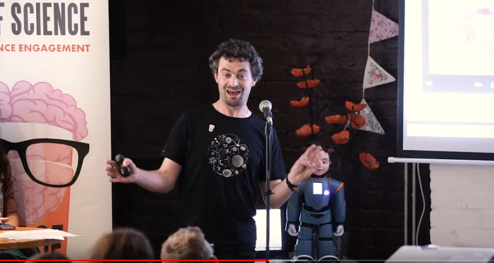
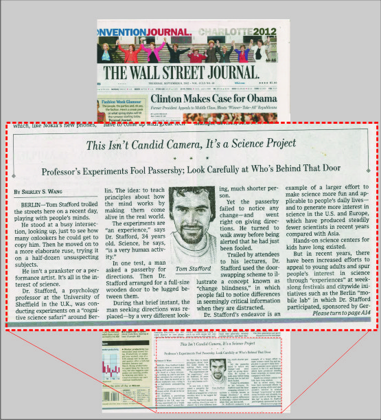

Talks
Coming up
6 February: My career in Metascience: Three things that worked for me, and three things I’d do differently. Metascience Fellows’ Meet, DSIT/UKRI Metascience Unit.
12 February: Understanding the reasons for vaccine hesitancy at NHS England digital Prevention Services, Thoughtful Thursday, 1pm, Canary Wharf
Past talks
2026
30th January: The metacience of peer review, as part of “Does AI threaten research integrity?” at University of Liverpool
- Abstract: Peer review is central to the lives of researchers - it determines if our papers get accented and if our funding proposals are successful. Metascience - also known as the science of science, or research on research - takes peer review as an object of study in its own right, and asks what we have learnt about how peer review works and how it might be improved. I’ll discuss how we worked with a research funder to evaluate a trial of Distributed Peer Review (a system where applicants for a funding call review each others’ applications), and talk about the topics in the psychology of expertise, judgement and decision making can be given new relevance in the study of peer review.
- Join online: https://www.ticketsource.co.uk/ukrn-liverpool/t-yzqrxyr
- slides, pdf
22nd January: Funder experimentation with AI, Ensuring Value in Research EViR
- Topic: There are many opportunities in research funding to use AI, such as improving applicant experience, reviewer selection, evaluation processes and feedback. In this talk I will introduce the Research on Research Institute’s work on AI, covering our project on responsible use of AI by research funders (GRAIL) and our workshops on how to develop evaluation experiments on the use of AI in research funding (AFIRE). I will share experiences of research funders with evaluating AI use, and suggest principles for making progress in this area. https://researchonresearch.org/project/a-f-i-r-e/
- slides, as PDF, recording
2025
16th October [Distributed Peer Review] for SSHRC seminar on funding experiments slides, as PDF
6th October: ARMA Research Evaluation SIG Drop-In Session: Randomisation in funding allocation - my slides, as PDF
Evaluating Distributed Peer Review at the Volkswagen Foundation. Metascience 2025, June 30 - 2 July, London.
The Metascience Lab, days 1, 2 & 3 at Metascience 2025, June 30 - 2 July, London.
Can AI be used for better matching of proposals to reviewers? Feasibility and formal evaluation with the Metascience 2025 conference. Metascience 2025, June 30 - 2 July, London.
Panel on Distributed Peer Review, International Conference on the Science of Science (ICSSI), June 16 - 18, Copenhagen.
June 4. “Do we truly understand those we disagree with, and how could we test this? The Ideological Turing test”, Evolution and Social Cognition lab, Institut Jean Nicod, Paris.
25 March: The Accelerator For Innovation & Research Funding Experimentation - AFIRE @ The National Research Foundation, South Africa; and Research on Research Institute Partnership Meeting: slides
19 February: (chair) AFIRE Funder’s Forum - promoting experiments by research funders : slides
4 February: “Do we truly understand those we disagree with, and how could we test this? The Ideological Turing test”, Psychopathology Lab meeting, University of Sheffield (host: Richard Bentall) : slides
2024
18 December: (chair) AFIRE Funder’s Forum - promoting experiments by research funders : slides
16 December: “History of partial randomisation in research”. At “Using partial randomisation to award research funding – a day of discussion”, hosted by the British Academy, London. Slides
20 November: (chair) AFIRE Funder’s Forum - promoting experiments by research funders : slides
23 October: (chair) AFIRE Funder’s Forum - promoting experiments by research funders: slides
8th September: “Research Culture in the UK”. Keynote at Pujiang Innovation Forum 2024, Shanghai, China.
- Britain has a rich industrial and scientific heritage, with an established and diverse research culture anchored within a world-leading University sector. Successfully sustaining and building on the reputation of British research means addressing the challenges and criticisms of how research culture has developed in the 21st century. I will review some of these challenges - hypercompetition and excessive workload, employment precarity, perverse metrics, unfortunate publishing practices, lack of transparency, irreproducibility of findings and threats to international collaboration - and suggest ways forward.
- Slides: PPT, PDF
9th September: “Experiments with the funding of research”. Shanghai Institute for Science of Science.
- Research funders share some common concerns: how do they know if they are allocating funding in the way that is most effective, fair and best balances risks versus possible rewards? Although a large variety of different funding systems exist, rigorous evidence on how funding can be designed to promote the best outcomes is not common. I will speak about the Research on Research Institute, and the programme on formal experiments that I lead there: AFIRE https://researchonresearch.org/project/a-f-i-r-e I will showcase good examples of strong evidence on aspects of funding systems, and talk about how funders might better use and generate evidence in the future
- Slides: PPT, PDF, transcript
22nd May 2024 AFIRE Project, Research on Research Institute at Seminar: Interventions for Funding Application Assessments for EDI Caucus
17th April 2024, Improving The Research Funding Lottery at School of Architecture, University of Sheffield.
- Researchers spend hours and hours writing funding proposals and in the end bad ideas get funded and good ideas get missed. Everyone has the suspicion that the funding process is biased against people in the wrong fields, from the wrong institutions or with the wrong backgrounds. Can research funding be improved, and what does the evidence say? Tom will talk about work from the Research on Research Institute, and about projects on innovations in how research funding is awarded.https://researchonresearch.org/
10th April 2024, Research on Research at School of Psychology Research Day, University of Sheffield.
9th February 2024, Adventures in the Multiverse at TARG, University of Bristol
Complex data and complex methods mean multiple statistical analyses are potentially legitimate. Multiverse analysis offers a tool to interrogate the stability of results under different analysis choices. After introducing the general history and rationale of multiverse analysis, I will talk about two multiverse projects I have been involved in, both in my research area of bias and decision making, and what we have learned from them
Slides: “Adventures in the Multiverse” (PDF)
19th January 2024 6pm UK time, Google IQ Research Talk: When people are wrong on the internet - reasons to be optimistic (host Mevan Babakar)
Human reasoning in the digital age has a terrible reputation. People are often portrayed as hopelessly biased, polarised and resistant to good sense, while - strangely - also being easily manipulated by malevolent forces and bizarre fads. From the trenches of psychological science, I bring you good news! I will discuss two strands of work. In the first, we show that even minimal deliberation allows online groups to select away from intuitive but wrong answers (and that there are prospects for language-model based dialogue agents to support good group reasoning). More at delibot.xyz. In the second strand of research we show that, across polarising topics, UK partisans are surprisingly good at representing the views of the ideological opponents, and that the better people are at this the more likely they are to view people they disagree with as moral, informed and rational. More in Brand, Brady & Stafford (2023).
2023
7.30pm 18th of September 2023 for the Consciousness Perspectives Forum of the Scientific and Medical Network [online, £]
2pm, 6th Sept 2023:. The Possibility Studies Network [online, free]
30 June 2023 RoRI’s Experimental Research Funder’s Forum at workshop on The Funding of Science and Innovation, Milan, 29-30 June 2023 (PDF)
6th June 2023 Research on Research: Introducing Metascience at the Scharr Research Away Day, University of Sheffield.
24th May 2023 “The UKRN’s Open Research programme. WP1: Training” at Keele Open Research week conference
5th of May 2023 Keynote at EACL2023, Sixth Workshop on Fact Extraction and VERification:
2nd March 2023 - “Maximizing the potential of digital games for understanding skill acquisition”, Invited Speaker, Center for Educational Neuroscience, UCL
2nd Feb 2023 - talks and panel discussion INTERFACE: Art/Technology/Collaboration
newsletter on this Microarguments and macrodecisions
2022
9th December 2022 - Wide Open? Inaugural annual Open Research lecture, University of Sheffield.
7th Dec 2022 -Faculty doctoral training on research professionalism & integrity(DDP Module code: FCP611)
8th November 2022 - “How arguments work: The Delibot Project”, Department of Psychology research day
- See also delibot.xyz
4 November 2022 - Invited Speaker, School of Collective Intelligence, Mohammed VI Polytechnic University, Morocco: “How Arguments Work”
2 September 2022 - Plenary Lecture, How the research on Research Institute (RoRI) is aiming to improve how research is funded, practiced, communicated, and evaluated. Meeting of the NeuroLeman Network and Doctoral Schools (NLN) 2022, Les Diablerets, Switzerland
Presentation slides (PDF, 5.1MB)
7–9 September 2022 - Keynote, BPS Cognitive Psychology Section Conference 2022, University of Sussex
Presentation slides (PDF, 4.8MB)
20 April 2022 - Maximizing the potential of digital games for understanding skill acquisition. Part of Digital Creativity Speaker series @ University of York.
Presentation slides (PDF, 3.2MB)
6 April 2022 - Research Improvement at TUOS
- Google slides (requires University login to view)
These slides form the basis for events run in the:
Department of Urban Studies & Planning (2022-04-26)
Department of Economics (2022-05-04)
The Social Research Institutes (2022-05-13)
School of Architecture (2022-05-19)
School of Education (2022-05-25)
School of Clinical Dentistry (2022-05-26), Centre for Care (2022-06-07)
Department of Sociology and Social Care (2022-06-07)
Department of Politics (2022-06-07)
Department of Architecture (2022-06-29)
Department of Landscape Architecture (2022-07-06) and others.
23 March and 14 April 2022 - Understanding the brain through the eyes
What we see and how we see can be used to help us understand how the brain works. Illusions are not just visual tricks, but illustrate the deep principles which our brains use to construct reality. In this talk, with the use of many examples, I will show how the study of illusions provides important lessons for psychologists trying to understand all aspects of mind, brain and behaviourPresentation (PDF, 3.2MB)
23 Feb 2022 - Open Research at the DDRI Network meeting
2021
7 December 2021 - Faculty doctoral training on research professionalism and integrity (DDP Module code: FCP6101)
25 November 2021 - SuperVisionaries: Open Research for Supervisors
17 November 2021 - Open Research Conversations: “Open Source Licensing”, with Bob Turner
27 October 2021 - Into the Multiverse, slides to support a Sheffield MetaNet discussion
30 June 2021 - The rise of on-line political advertising: A ‘moral panic’?, with Dr Kate Dommett, a Top Talk from the APG.
Presentation (PDF, 2MB)
16 June 2021 - Why you should use decision models with your response time and accuracy data at Centre for Cognition and Neuroscience, University of Huddersfield (and online).
Decision modelling is increasingly accessible and yields highly practical benefits to experimental psychologists. This talk will explain why and how you should apply decision models to your data.
Response time and accuracy are fundamental measures of behavioural science, but discerning participants’ underlying abilities can be masked by speed-accuracy trade-offs (SATOs). SATOs are often inadequately addressed in experiment analyses which focus on a single variable or which involve a suboptimal analytic correction. Models of decision making, such as the drift diffusion model (DDM), provide a principled account of the decision making process, allowing the recovery of SATO-unconfounded decision parameters from observed behavioural variables.
I will show, using simulations and worked examples from experimental data, how decision models allow potentially massive increases in statistical power at the same time as helping you avoid mistaken inferences due to variations in participants’ SATOs strategies. Because the modelling community has focussed on differences between different decision models, this has disguised the fact that there is now a consensus around the core mechanisms which define the family of plausible decision models, as well as increasing agreement on tools for fitting behavioural data with these decision models.
Stafford, T., Pirrone, A., Croucher, M., and Krystalli, A. (2020). Quantifying the benefits of using decision models with response time and accuracy data. Behavioral Research Methods, 52, 2142-2155 doi.org/10.3758/s13428-020-01372-w
See also:Presentation (PDF, 1.3MB)
14 June 2021 - A researcher’s perspective on reproducibility, University of Sheffield Medical School Research Meeting
Presentation (PDF, 1.2MB)
3 March 2021 - Revolutions in Reproducibility, Sheffield Metascience Network Launch
Presentation (PDF, 1.1MB)
18 Jan 2021 - Reproducibility in Practice - Open Research Conversations at University of Sheffield. With Dr Anna Krystalli
Presentation (PDF, 673KB)
2020
28 Jan 2020 - Bias and Blame - Department of Psychology, University of York.
Presentation (PDF, 2.3MB)
2019
12 Nov 2019 - Unconscious Bias - at Ministry of Justice, Digital and Technology, Sheffield.
Presentation (PDF, 2.2MB)
21 Oct 2019 - Analysing Big Data to Understand Learning - 15 minutes for SMI606, at the Sheffield Methods Institute.
Presentation (PDF, 1.9MB)
5 Oct 2019 - Rational Choices About Who To Trust, Truth and Trust Online.
Presentation (PDF, 1.6MB)
26 Sept 2019 - Bias, Skill and Decisions, Department of Computer Science, University of Sheffield (Natural Language Processing Group).
Presentation (PDF, 812KB)
8 April 2019 - Computation, Science and Reproducibility, HPC at Sheffield.
Presentation (PDF, 1.5KMB)
8 February 2019 - Confronting Bias, Disciplinary Conference.
Presentation (PDF, 1.9MB)
30 January 2019 - Research Blogging, A Bite Size Guide to Research in the 21st Century - Communicating Your Research.
15 January 2019 - Reasons and Values, Remarks at “Re-energising the narrative: human rights in the digital age” at Wilton Park.
Transcript (PDF, 36KB)
2018
25 Sept 2018 - The Choice Engine at Festival of the Mind
Presentation (PDF, 2.5MB)
24 Sept 2018 - Defining Bias at Empirically Informed Implicit Bias Training workshop
Presentation (PDF, 1.4MB)
2018 - Debating Sex Differences in Cognition: We Can Do Better
Presentation (PDF, 707KB)
2017
9–12 July 2017 - Psychonomic Society Leading Edge Workshop: Beyond the Lab: Using Big Data to Discover Principles of Cognition, Madison, Wisconsin, USA.
Presentation (PDF 4.2MB)
16 May 2017 - Optimal Learning in Games @ Pint of Science, Sheffield
Screenshot from video:

31 January 2017 - Experiments in Learning, Greenwich University Open Lectures in Teaching and Learning.
Presentation (PDF 1.4MB)
19 January 2017 - Learning: new techniques for the old topic, University of Dundee, Department of Psychology.
2016
7 June 2016 - Research Bloggin, A Bite Size Guide to Research in the 21st Century
Presentation (PDF, 1.4MB)
16 March 2016 - Factors influencing optimal skill learning: data from a simple online game, Network on Intrapersonal Research in Education (NIRE), York
Presentation (PDF, 3.1MB)
2012
July 2012 - A Berlin Cognitive Science Safari
And I made the cover of the Wall Street Journal:

2011 and earlier
Beyond reinforcement learning in action acquisition, (OpenOffice, 3.7MB) 9 November 2011, Department of Psychological Sciences, Birkbeck University of London.
Inferring cognitive architectures from high-resolution behavioural data, 13 May 2011, York Centre for Complex Systems Analysis, University of York.
A novel task for the investigation of action learning, 7 July 2010, Experimental Psychology Society, Manchester, 7-9 July 2010
An empirical test of some philosophies of science, 21 May 2010, Heng Seng Centre for Cognitive Studies, University of Sheffield
How do we use computational models of cognitive processes?, Neural Computation and Psychology Workshop, 8-10 April 2010, Birkbeck, London
What use are computational models of cognitive processes?, (PowerPoint, 3.6MB) 19th of March 2010, Redwood Centre for Theoretical Neuroscience, UC Berkeley
Using the psychophysics of choice behaviours to infer mental structure from reaction times,(PowerPoint 2MB) 15th of January 2010, Department of Psychology, National University of Ireland, Galway
Pieron’s Law holds in conditions of response conflict, 1st August, presented at the 31st Annual Conference of the Cognitive Science Society. Amsterdam, The Netherlands.
Presentation (PowerPoint, 1.6MB)The nonconscious mere exposure effect with brand logos: real but elusive, Department of Psychology, City College, Thessaloniki, 1/6/09
Email: the technology and psychology of continuous partial attention, UFI, Sheffield, 12 November 2008
Things can be known : Teaching psychology through demonstrations (PowerPoint, 7.4MB) Keynote at 26th Annual Conference of the Association for the Teaching of Psychology, University of Lincoln, 11th of July, 2008
How to make students talk in seminars, HEA Psychology ‘Postgraduates who Teach’ Network, University of Birmingham, 27 May 2008
The psychological foundations of privacy, Privacy in Law, Ethics and Genetic Data, 1st international workshop PRIVILEGED Project (EC FP6), 10 Jan 2008
Debates in Cognitive Neuroscience, Centre for Inquiry Based Learning in the Arts and Social Sciences, University of Sheffield, 30 May 2007
Is there a science of advertising? (PowerPoint, 3.3MB) University of Hull, Management School, 27th of April 2007
Residents’ perception of risk on contaminated sites, Environment Agency training day, Leeds, 20th of June, 2007